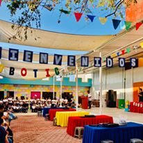
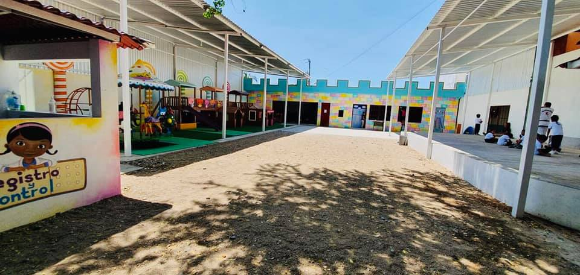

INSTALACIONES CON LAS QUE CUENTA
* Contamos con área de enfermería, área de psicología, 2 centros de cómputo, biblioteca, ludoteca, patio de juegos infantiles y un sistema completo de seguridad (cámaras de videoviligancia-interfón-control de acceso a través de registro de huella digital) “La enseñanza que deja huella no es la que se hace de cabeza a cabeza sino de corazón a corazón” Howard Hendricks (1924-2013)
 ACTIVIDADES
HACEN MANUALIDADES
DIAS DE EXCURSIÓN
CONCURSOS DE ROBOTICA
DIVERSOS TRABAJOS EN LA ESCUELA Y
EVENTOS DE DIAS FESTIVOS